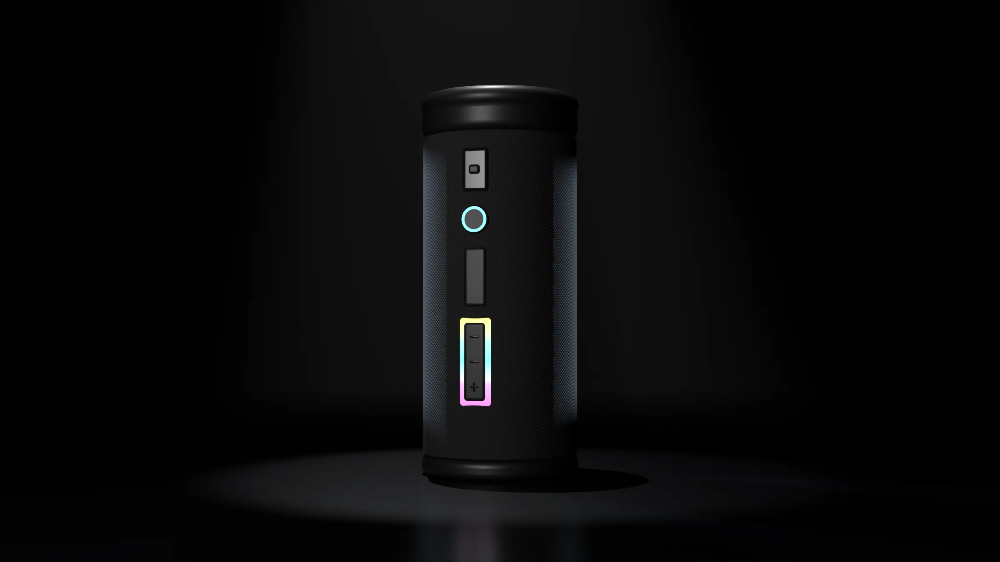
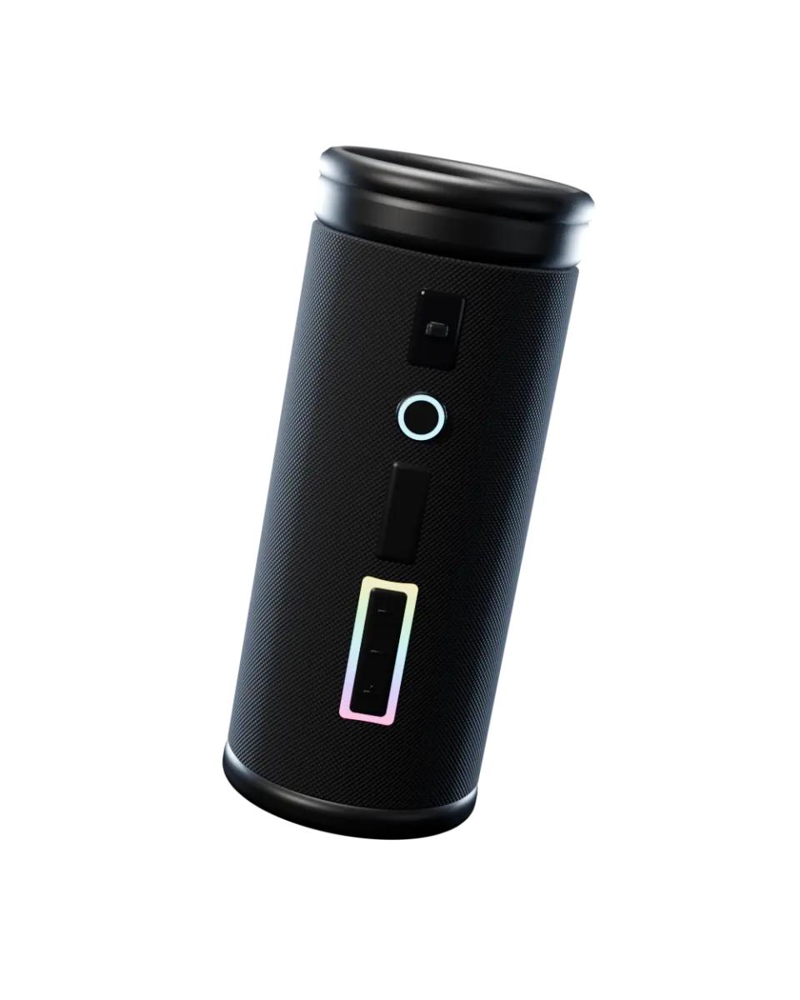
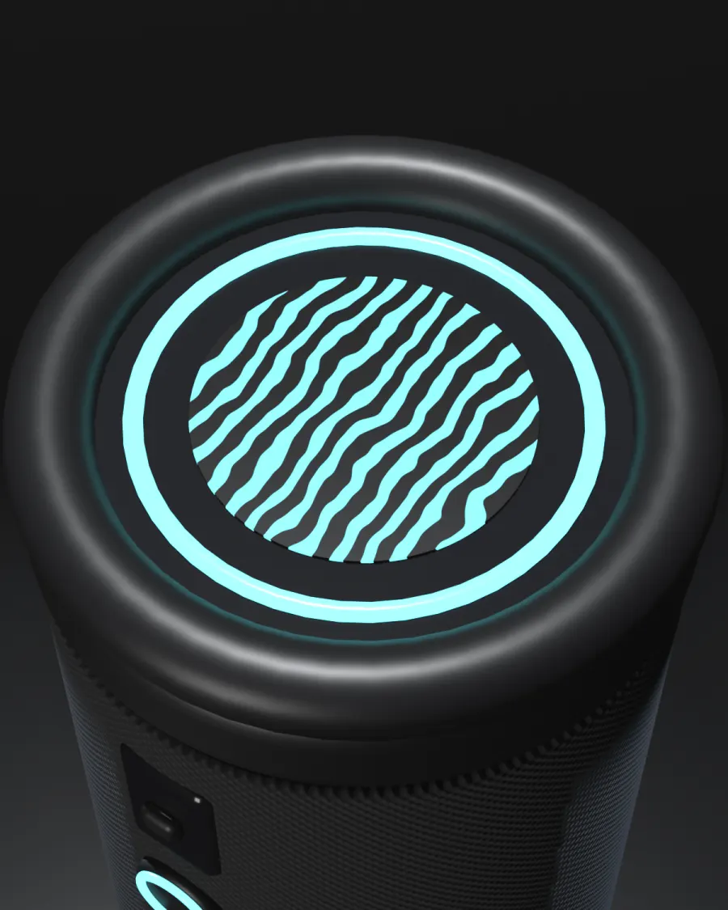
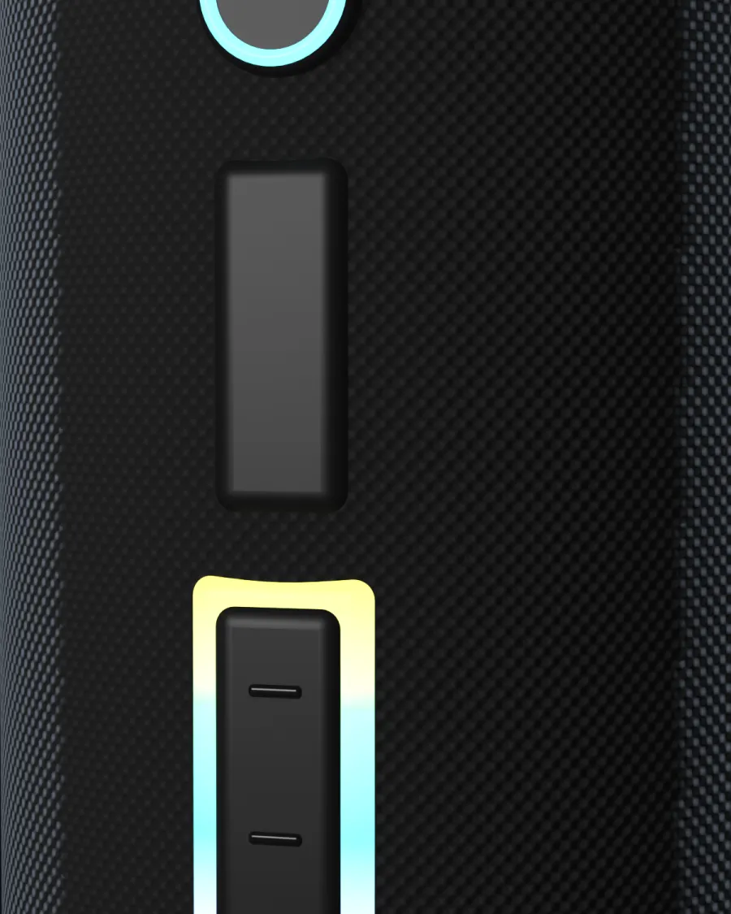
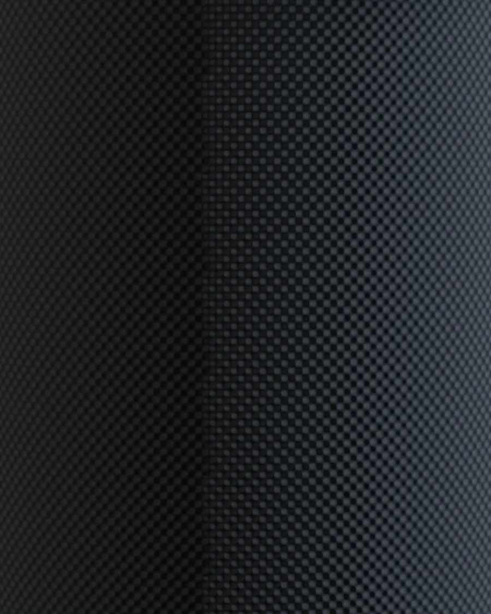
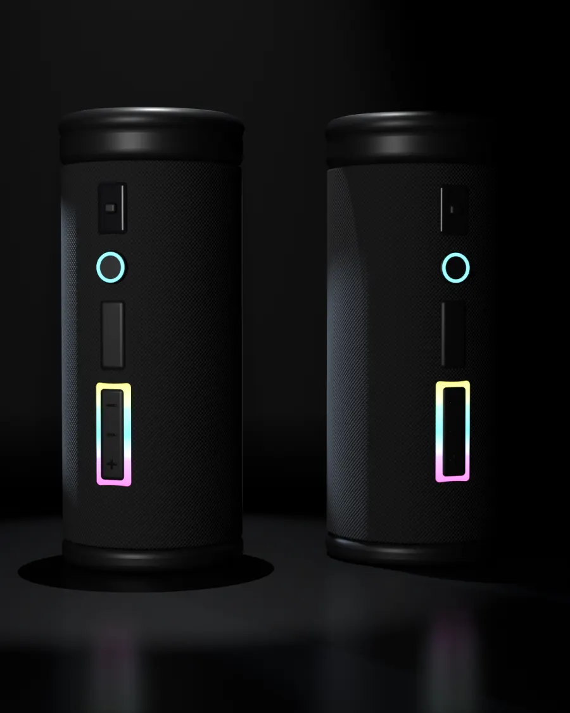

Toda la sala en una mano
Ondra Pulse es un parlante portátil que suena en 360°: el grave sale por arriba y llena la habitación desde cualquier lugar de la mesa.

Mirá cada lado
Un sonido que llena la sala
Dos parlantes de rango completo y un radiador pasivo arriba. El grave se abre para todos lados, así que no hay un lado de atrás.
Una luz que sigue los graves
El aro y el logo de arriba laten con la música. Se elige el color o se apaga con un toque largo en el botón de modo.
Tela de punta a punta
Un tejido sin costuras a la vista ni tornillos. Aguanta lluvia, arena y una caída de la mesa de la terraza.
Todo a mano, sin mirar
Volumen, pausa y modo de luz en relieve, en una sola tira: se encuentran con el pulgar en la oscuridad.
Todo el día
24h
de batería con el volumen a la mitad. Diez minutos de carga dan dos horas más.
40W
de potencia, sin distorsión a todo volumen.
IP67
contra agua y polvo: media hora bajo un metro de agua.
Hecho para usarlo
Cuatro detalles que se notan el primer día y no cambian con el uso.
Luz a tu gusto

El aro y el logo laten con los graves, en el color que elijas.
Botones en relieve

Volumen, pausa y modo se encuentran con el pulgar.
Tela sin costuras

Aguanta lluvia, arena y caídas sin rasgarse.
De a dos, estéreo

Emparejá dos y cada uno toma un canal.
Elegí su luz
Giralo con el mouse o el dedo y probá los cuatro colores del aro. La página entera cambia con él.
US$ 149
con funda
- El parlante, en el color de luz que elijas
- Funda de malla con cordón
- Cable USB-C
- Envío gratis y dos años de garantía
Te escribimos para coordinar el pago y el envío.
Preguntas
¿Se puede mojar?
Sí. Es IP67: aguanta lluvia, salpicaduras y media hora bajo un metro de agua dulce. Después del mar, enjuagalo con agua limpia.
¿Cuánto tarda en cargar?
Tres horas de cero a lleno por USB-C. Diez minutos alcanzan para unas dos horas de música.
¿Puedo usar dos juntos?
Sí. Con dos, cada uno toma un canal y suenan en estéreo. Con más de dos, todos reproducen lo mismo a la vez.
¿Se puede apagar la luz?
Sí. Un toque en el botón de modo cambia el color; un toque largo la apaga y la batería rinde un poco más.
¿Sirve para llamadas?
Tiene micrófono con reducción de ruido: atendés con el botón de pausa y cortás con un toque doble.
¿Qué trae la caja?
El parlante, la funda de malla con cordón y un cable USB-C. El cargador de pared no viene incluido.
¿Qué garantía tiene?
Dos años contra fallas de fábrica. Si algo anda mal, lo cambiamos y pagamos el envío.